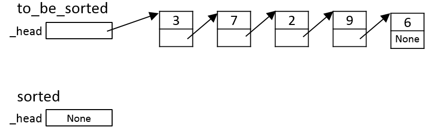
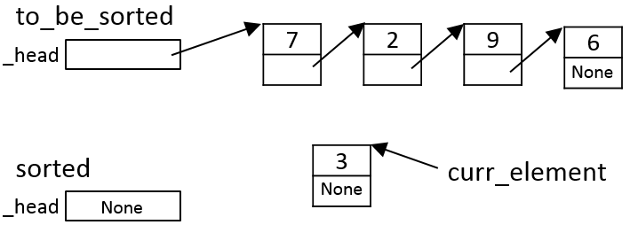
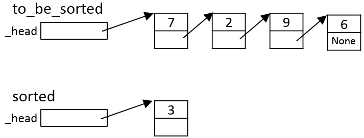
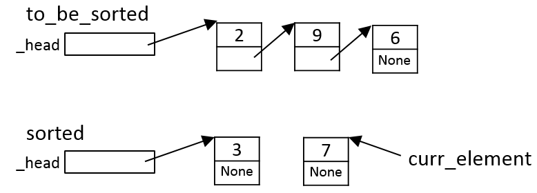
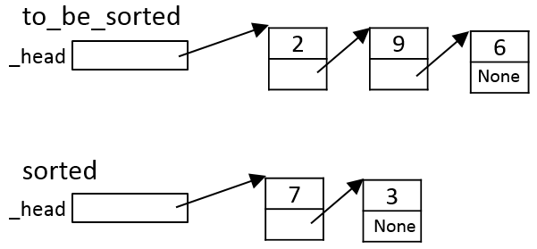
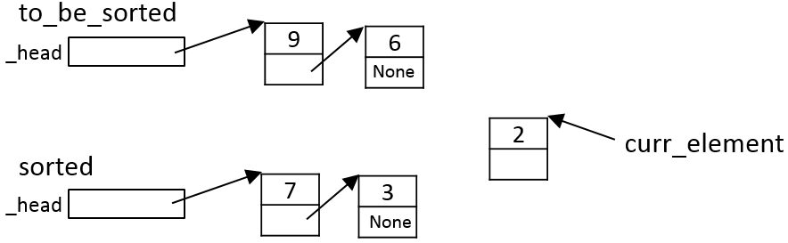
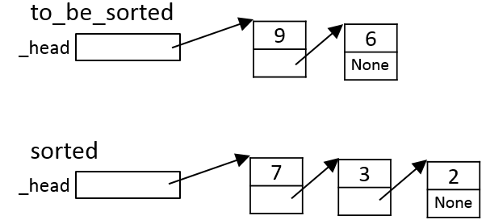

CSc 120: Sorting Linked Lists
We will use an intuitively simple algorithm to sort linked lists. The
essential idea is the following. Given a linked list to_be_sorted
to sort, the algorithm repeatedly moves nodes
from the original list to_be_sorted to a new list
sorted, maintaining the invariant that
sorted is always kept in sorted order (i.e., for the
purposes of this assignment, in descending order by
by the _value attribute in the short problem and the _count attribute in the long problem).
Data structures
The algorithm has a linked list,
sorted, which contains all of the nodes
that have been sorted so far.
Initially, sorted is empty (i.e.,
sorted._head has the value None). Each iteration
of the algorithm (step 2 below) adds a node to this linked list. The
algorithm maintains the invariant that this list is always kept in
sorted order.
Algorithm
The algorithm repeatedly performs the following steps:
-
Remove a node, call it curr_element, from the head of
to_be_sorted.
-
Iterate down the list sorted to find the position
where curr_element should be inserted
such that, after curr_element has been inserted,
sorted remains in sorted order.
-
Insert curr_element at that position in sorted.
This results in one more element being placed in sorted order
in the sorted list.
The iteration stops when all elements have been moved from
to_be_sorted to sorted. At that point,
to_be_sorted will have the value None and
sorted will have all of the nodes in sorted order.
The algorithm then
copies the list sorted to the head of to_be_sorted.
The key step in the algorithm above is step 2. The logic for this step is
as follows. Here, we follow the requirement for this assignment
that the list should be sorted in descending order. We say that an element
A is "smaller than" an element B if A's count is less than
B's count.
-
If sorted is empty: add curr_element
to the head of sorted.
-
Otherwise, if the first element of sorted is smaller than
curr_element: add curr_element at the
head of sorted (so curr_element becomes the
new first element).
-
Otherwise, iterate down sorted to find an element
E satisfying the following:
-
E ≥ curr_element;
and
-
either E._next < curr_element,
or E._next is None.
(The simplest way I can think of to do this uses two loops
one after another:
first, iterate down sorted to find the first node whose count
is smaller than curr_element, call this node
E1; second, iterate down
sorted again to find the node E just before
E1.)
Insert curr_element immediately after E.
Example
Suppose that, initially, the list to_be_sorted is the
following:

Iteration 1
The first iteration of the algorithm moves the first element from
to_be_sorted for insertion into sorted:

Since sorted is empty (Item a in the algorithm
above), curr_element is added to it as its only element:

Note that this preserves the invariant that sorted is
in sorted order.
Iteration 2
The algorithm again moves the (current) first element from
to_be_sorted:

Since this element is bigger than the first element of sorted
(Item b in the algorithm above)
it is inserted at the head of sorted:

Note that, again, this preserves the invariant that sorted is
in sorted order.
Iteration 3
The algorithm once again moves the (current) first element from
to_be_sorted:

Since this element is smaller than the first element of sorted
(Item c in the algorithm above),
the algorithm iterates down sorted to find the position
where it should be inserted. In this case, item
c.ii of the algorithm applies, with E._next ==
None; i.e., curr_element is inserted at the end
of sorted:

Note that, again, this preserves the invariant that sorted is
in sorted order.
This process is repeated with the remaining elements of the linked list
to_be_sorted.